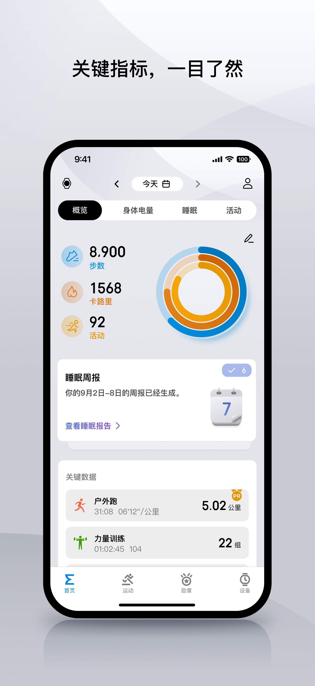
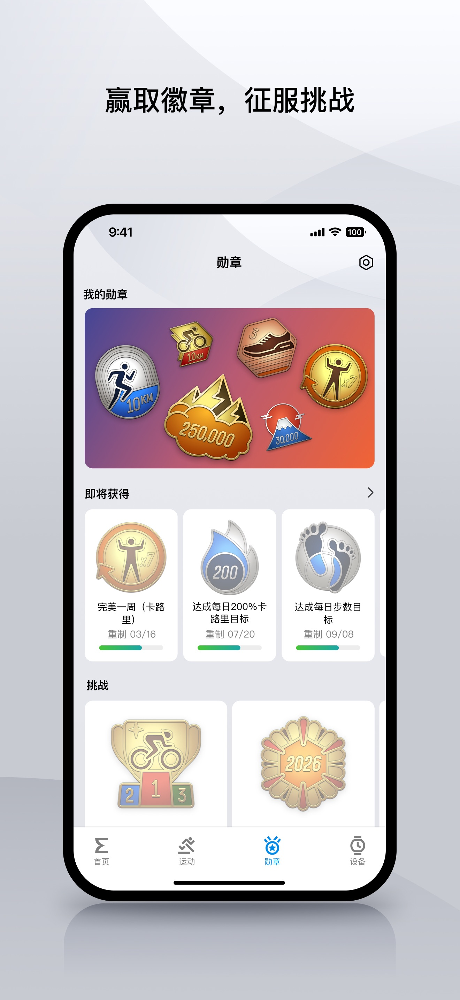

Zepp App 全维度盘点：从配对到健康生态，一款手表伴侣能做到什么程度
把 Amazfit 手表生态从连接、健康监测到个性化改造的能力面完整铺开，哪些是真亮点、哪些藏着短板、哪类人最值得入手这套组合。
如果你戴过 Amazfit 或 Zepp 系列的智能手表，大概率已经装过 Zepp App。但多数人只把它当"配对用的东西"——蓝牙连上、同步一次数据就把图标丢进文件夹，再也没打开过。这其实挺可惜的——zepp app官网上标注的那些功能项，多数人只用了个零头。Zepp App 远不止一个连接工具，它是整个手表生态的中枢：从设备管理、健康数据分析到个性化定制，甚至是手表功能的扩展入口，都绕不开它。
这篇文章会把 Zepp App 的能力面完整铺开给你看。我不会照着功能列表一个个念，而是按"它替你解决什么问题"来分组梳理——每个能力域讲清楚它能提供什么、真正好用的地方在哪、什么场景下你会意识到它的价值。
设备连接与管理：从配对到迁移的完整闭环
即便只是从zepp app下载安装 Zepp App 这一步，背后也藏着多设备兼容的设计考量——它对多设备、多场景连接的覆盖，才是最基础也最容易被忽视的能力。配对这件事本身就够有意思——主流的 GTR、Bip 系列有屏幕可以扫二维码，Helio Strap、Helio Ring 这类无屏设备就得走"手动搜索"的老路。无屏设备的配对完全靠 LED 指示灯和震动反馈，红闪偏低、蓝闪居中、绿闪充足，配对成功与失败各有一次短震动提示。知道这个的话，配对卡住时盯着信号灯比反复点"重试"高效得多。
配对只是开始，Zepp App 在设备管理上的亮点在于多设备支持和无缝迁移。一个账号可以同时绑定多块手表，手表与手机的蓝牙连接优先级会根据使用习惯自动调整——出门戴 GTR 记录运动，在家戴 Bip 轻量日常，两块表的数据都汇总到同一条时间线上。换手机时的解绑迁移是另一个高频痛点：旧手机上先在 Zepp App 里点"解绑设备"，等蓝牙完全断开后再在新手机上重新绑定，顺序反了容易把设备锁在旧账号里。更完整的迁移步骤可以在zepp app文档里查到，这个细节说明它确实在认真对待"换设备"这个高频场景。

健康与运动：不是数据堆砌，是趋势反馈
这是 Zepp App 价值密度最高的部分。它不会给你一张复杂的体征仪表板让你自己分析，而是把采集到的数据转化成可理解的趋势提示。
PAI（个人活动智能）是整个健康体系的核心指标，它把心率、运动、活跃度综合成一个 0~100 的分数，低于 100 就提示"你需要动一动了"。相比每天看一堆数字算自己够不够，PAI 的好处是"直接给结论"——本周 PAI 冲到 120 说明运动量超预期，连续两周低于 60 就是身体在喊休息。睡眠追踪同样做了简化：不只是记录时长，而是拆成深度、浅度、REM 三段，并与静息心率、夜间呼吸模式做交叉关联。连续几晚深度睡眠段偏短，Zepp App 会主动提示"你的夜间恢复状态不太好"。
户外运动记录是另一个亮点。有 GPS 手表的用户可以让手表记轨迹，手机端完全不用开 GPS——这直接解决了"戴手表跑步还得带个开定位的手机"的尴尬。手表记录的轨迹精度比手机 APP 记录高，而且手机全程闲着省电。没有 GPS 手表也没关系，Zepp App 支持手机 GPS 记录，但默认推荐"仅使用期间允许定位"，运动结束后自动收回定位权限，避免后台持续耗电。

个性化与扩展：表盘、组件与小程序生态
智能手表的灵魂是个性化，Zepp App 在这块的动作相当完整。表盘商城是最直接的入口，设备页中部有一个横滑预览区，看中的表盘点一下就能通过蓝牙推送到手表上——这个过程通常不超过 10 秒。当前佩戴的表盘也能直接在手表上长按进入选择页快速切换，两条路径分工明确：商城负责"发现新品"，手表长按负责"快速轮换"。
部分表盘支持组件自定义——表盘上哪个位置显示步数、哪个位置显示 PAI、哪个位置留作天气，全部由你决定。把最常看的数据放在表盘首位，抬腕效率直接翻倍。照片表盘是另一个高频使用的定制项，多数型号支持把相册照片设为背景，部分还能整点轮换。这里有个实用建议：选深色背景的人像照，表盘指针和数据在浅色照片上的可读性会下降。
Zepp App 还内置了小程序商店，第三方开发者可以通过官方平台发布表盘和工具类小程序。这是手表功能扩展的主要入口——有些小程序能把手表当成手电筒，有些能播放播客，还有些提供更丰富的运动数据视图。当然，官方渠道之外也有社区工具生成的表盘，Zepp App 不会拦，但安装可靠性得自己判断。
数据的边界与真相：它能做什么、不能做什么
用了一段时间后你会发现，Zepp App 对"数据边界"这件事的态度相当坦诚——应用商店的温馨提示和各设备说明书反复强调：所有测量数据不适用于医疗用途，仅用于一般健康和健身目的。
这句话不是官样文章，而是三条实操边界：不能据此自我诊断（心率变异性走低不等于生病）、不能据此调整用药、异常时就医而非重测。消费级设备的算法以人群统计为基础，个体波动巨大。那这些数据的真正价值是什么？是趋势和生活方式反馈：连续一周静息心率抬升提示该休息了，夜间呼吸模式紊乱提示该关注打鼾问题，运动后心率恢复变慢提示训练过量。作为提醒你去医院的哨兵，它们很有用；作为代替医院的裁判，它们不合格。
心脏健康仪表盘里可以手动录入医院设备测得的血压、血糖数值，Zepp App 的设计意图是把它们与睡眠、运动、压力数据放在同一条时间线上对照看相关性。注意：录入值不参与算法校准，也不会提高其他指标的精度——它就是一个集中记录的工具。
不得不说的短板
客观地说，Zepp App 不是完美的。后台 GPS 耗电是最突出的问题——应用商店说明里专门写了一条"后台使用 GPS 数据会逐渐耗尽电池电量"。这个耗电有两层构成：蓝牙连接、同步数据、推送通知是伴侣应用的本职工作，无可避免；而后台 GPS（户外运动记录轨迹时）、高频健康监测、Aura 音频播放是可以按需关掉的条件耗电。上一条刚让你把应用加入电池优化白名单保推送，这一条又讲耗电——看似矛盾，实则是两个独立的耗电场景：白名单保证蓝牙同步与推送的存活（必要耗电），GPS 类耗电由"是否有运动在进行"决定。正确的组合是白名单加上运动外不授予常驻定位。
另一个局限是机型差异。Zepp App 的完整功能集只在较新的设备上可用，老款 Bip 系列反射屏太小，配对流程只能走蓝牙搜索，也用不了表盘商城的组件自定义。Helio Strap 这类无屏设备连二维码配对都做不到，全靠 LED 和震动交互。
什么样的人该用这套组合
如果你是下面几类人之一，Zepp App 值得认真对待：
已经在戴 Amazfit/Zepp 手表的人。你已经花了钱买硬件，把 Zepp App 用好相当于把硬件潜力完全释放。至少把 PAI、睡眠追踪和表盘商城这三个核心功能摸透——这三个是性价比最高的入口，不用额外花时间就能每天受益。
想建立运动习惯但不知道从哪开始的人。Zepp App 的 PAI 体系和运动记录功能把"运动"这件事量化得很清楚：每周 PAI 冲到 100 以上就算达标，运动中手表自动记轨迹和数据，结束后能回看配速、心率区间、海拔变化。它不教你怎么跑步，但能让你清楚地看到自己在进步。
关注健康趋势但不想被数据淹没的人。Zepp App 的策略是"少即是多"：不给你一堆原始数据让你自己分析，而是直接给趋势提示和行动建议。静息心率抬升 = 该休息了，夜间呼吸模式紊乱 = 该关注睡眠了，运动恢复慢 = 训练过量了。对于不想花时间研究数据的用户来说，这种"直接给结论"的方式比复杂的仪表板有用得多。关于这款应用的完整资料和设备适配列表，我分别在 GitHub、Gitee 和 GitCode 三个仓库做了同步——主站访问慢的时候换镜像源就行。